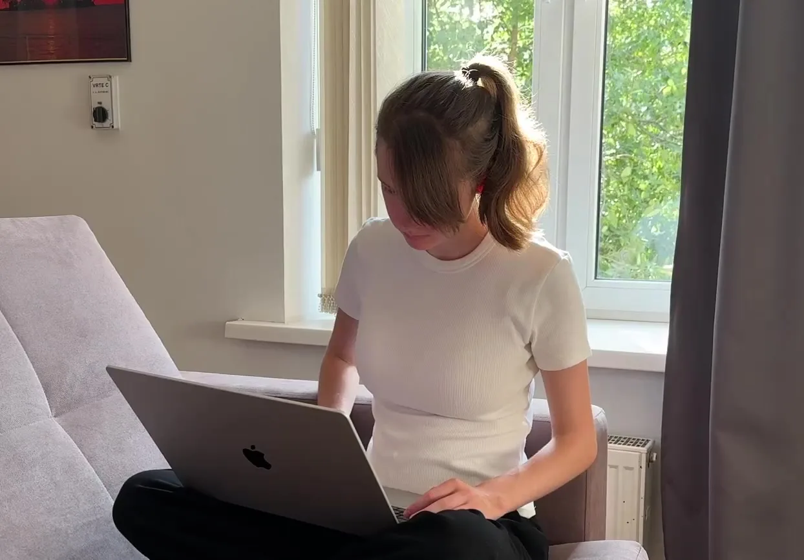
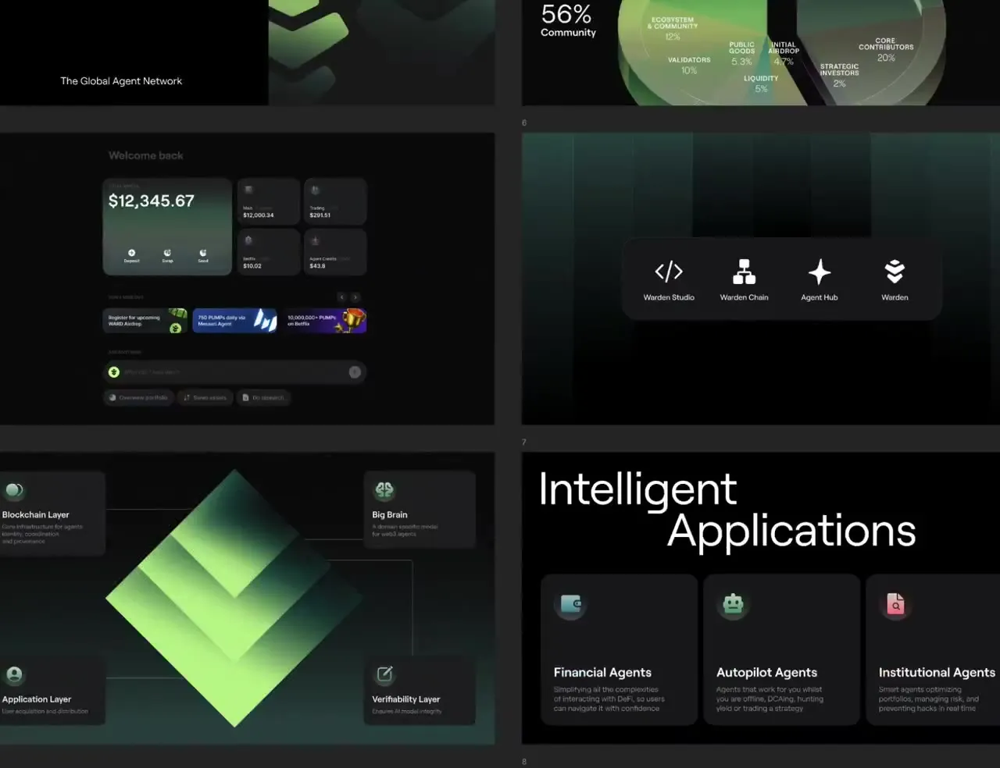

First, I ask questions
What message do you want to convey? Who is your target audience? What do you want people to understand or do next?
{ 01 }
Understand the brief
→ Before opening Figma, I go through the brief, content and context. I ask questions, check assumptions and agree on what the design needs to do.
{ 02 }
Consider the whole picture
→ I look at where the work will be used: a website, a campaign or templates a team opens every week. I also think about who will review it, update it and keep it working.
{ 03 }
Give every element a purpose
→ Type, colour, imagery and spacing all guide attention. I try different combinations, check what stands out and remove anything that makes the message harder to follow.

What matters to me:What matters to me
Brand before trends
Design should express the brand’s positioning and serve its goals. Trends can offer ideas, but they don’t decide the direction.
Built to grow
Design should form a flexible system that adapts to new formats, channels and business needs.
Recognisable
in every detailEvery piece should feel like it belongs to the same brand. Even a small detail or a cropped fragment should carry its identity.
Think beyond the image
I consider the message, format and context alongside the visuals. The design needs to work wherever people encounter it.
Decisions with a reason
I want to be able to explain my choices and discuss them openly with the team.
Room to experiment
Time, budget and technical requirements shape every project. I look for opportunities to experiment and try out unexpected ideas within those constraints.

The right tools for each task
I use Figma for most of my daily work, including prototyping and animation. For print work, I use Illustrator; for photo editing, Photoshop.
My workflow has changed with AI. I previously created 3D visuals in Cinema 4D and drew illustrations in Procreate. That experience helps me work with AI today: I know how to describe what I need, spot problems and refine the results. AI lets me try more ideas and produce assets faster.
I enjoy trying new tools and attending workshops. Recently, I’ve also started experimenting with code to understand how my designs become working websites.